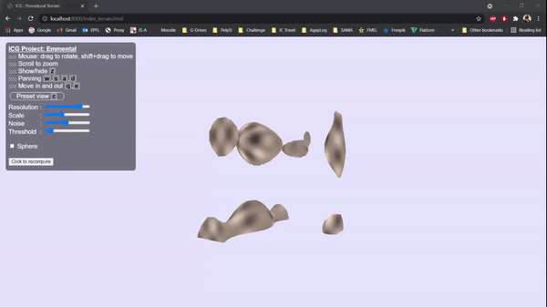

Implementation of 3D generated perlin noise
Implementation of marching-cubes to smooth the surface
Real-time GPU implementation to interact with the scene in real-time
Rotating the cube
Zooming in and out

Moving the cube

Eloi Garandel, Kilian d’Eternod, Elisa Bianchi
Our project builds on the last guided assignment of the course regarding Perlin noise and randomly generated terrains. We wanted to extend the functionality to create entire random worlds instead of just surfaces, meaning moving from 2D terrains to 3D ones. On top of this, the implementation of the marching-cubes allows to smooth out the surfaces to obtain a less blocky, Minecraft-like feel and making it more realistic and terrain-like. The final step we wanted to achieve but could not was to be able to move the cube whilst consciously generating the terrain in a coherent way so that this 3D world would seem infinite.
We first decided to base our project on the last lab skeleton which is the 7, as it will perform the same type of computation.
The first step of the project was to extend the noise function from a 2-dimension to a 3-dimension space. To do so, we adapted the noise shader. Thank to documentation and resources we have found, we mananged to create new gradients as well as a hash function that now takes into account the third coordinate.
So the first step is to get the point we want to calculate the noise value and the 8 corners representing the cube within which it is located. For each of those corners, we generate a gradient based on the hash of this corner. Then after that, with the gradients, we perform dot products (between the distance from the point to each corner and the gradient) to obtain a single scalar per corner. The last step is to interpolate each of those scalar and mix the different values (using the method already implemented in lab7) to get the final noise value for the initial point.
This process is quite fast as it is implemented directly in the shader like lab7. Once the noise map is genereted, we apply it on our meshes in order to generate a voxel terrain : we iterate through our vertices to see which are above or under the threshold.
In order to make that function work in the pipeline, we add to modify a bit the noise.js to get the correct mapping of function and the correct link between GLSL and JavaScript. To transmit the data between the shaders and the Javascript programm, we have also re-used the regl configuration with the FrameBuffers that was already present in lab 7 but we had to adapt it as the indices now take into account a third coordiante : we review all the indexing system and for example, the get method from the BufferData now also shifts the z-coorindate.
Once the noise has been generated and that we have our voxel terrain, the second step of the project is to smooth the surface using the marching cubes algorithm. We previously had subdivided our terrain into smaller cubes, which are made of faces (themselves made of triangle meshes) and vertices.
To apply the marching cubes algorithm, the first step is to look at each sub-cube and see which vertices should be drawn (its noise value above the noise threshold) : the set of vertices to be drawn can be translated into an index, the index of the vertices permutation we got for this particular cube. The index is then used in the MARCHING_CUBES_TABLE, that contains all the 256 possible permutations of vertices, which is itself in fact composed of 16 possibilites just rotated around. With this index, the table gives us the sets of vertices composing the new meshes we have to draw for this cube. You can see an example of table just below.
For instance, let’s say you have only one vertex out of 8 that is above the threshold : this corresponds to case n°1 (first row from top, second from left) on the table above (or one of its rotation at least), so the index you will get will be 1 and the table at index 1 will return only one triplet (since there is only one mesh for this case) containing the index of the vertices to draw this mesh.
Because sometimes, we have to draw the final meshes in the middle of edges, the new vertices do not correspond to already existing ones (we would have to add vertices between existing ones), we didn’t run this algorithm using 1x1x1 sub-cube as at this point of the generation, we couldn’t add more vertices. Instead, we run it using 2x2x3 cube to get a “middle vertex” and this we can add “cuts” to our voxel terrain.
Here, after the noise function and the Marching cube algorithm, instead of drawing every remaining mesh, we add a condition to draw them : this condition is simply a distance computation between the center of the cube and the mesh and we put a threshold on that distance so that only the meshes within this distance are drawn (basic sphere equation).
To implement the sliders, we first modify the HTML code of the source page in order to add the sliders on it. Then each slider has been given an id and thus, this slider’s value can be accessed directly in the JavaScript code using those ids : the transmission is pretty straight-forward. We added several sliders for general parameters so that the user can see the impact of each paramater on the final result.
For the controls, we re-used the pre-existing code (updateCameraTransform among others) but slightly modified it to meet the project’s goals. To implement the panning of the cube, we added a translation matrix to get the wanted camera movement.
During our work on the projects, we had a number of problems and setbacks, but we most of the time arrived to a solution.
Firstly, as we reused the skeleton from the previous lab, we took quite some time to study the existing code, to fully understand what each part did. We filtered it to discard parts that were not anymore used in the project and that make the code too overcrowded. From there we arrived pretty easily to the point where we could generate a voxel terrain but had a lot of performance issues as we were drawing all the cubes faces, so almost 8 times more than what was actualy needed, but as it wasn’t going to be in our implementation, we prefered to not waste time optimizing it.
It was also at this point that we encountered our first major setback. We were very limited in term of how many vertices we could draw, if we asked too much of our program, it would give us weird visual results but without any errors or warnings. It was really hard to pin the issue down so we decided to ask for help from a TA who found the problem quite easily. The number of vertices is limited by the numbers of elements that REGL can handle and the index is normally only encoded on a signed integer which limits a lot the maximum number. He recommended us to add an extension to the REGL configuration called ‘OES_element_index_uint’ which would make the indexing use an unsigned integer instead. This greatly increased the number of vertices we could draw and we had no further problem like this when staying at reasonnable resolution values. This issue was very frustrating as we had no indication of what could cause the problem and dind’t asked for help fast enough so we lost quite a bit of time.
Then when implementing the 3D noise function, we actually spent more time on paper, trying to visualize from the 2D noise function how it could be extended to 3D, than actually coding it. We arrives to a fully 3D noise function and only realised later that we could simply reuse the 2D one in a specific way to achieve the same result so it was a lot of time wasted and put us even more behind on schedule. Then arrived the second major problem that we had, adapting the lab 7 noise buffer to take the 3D space values now instead of the 2D space and finding the correct indexing. It wasn’t hard to make the program use our new noise function but the framebuffer used to transmit the values is only really made for 2D, We tried other structures REGL offers but couldn’t get to any results. The fact that a lot of other parts of the code relied on it like the shaders made it really difficut to change unless we wanted to redo everything from the start which we couldn’t afford timewise. The framebuffer was the only way we found to effectively compute and transmit the noise map but despite all our best efforts it doesn’t really work for 3D. When we directly use the noise values from the buffer we get only correct noise in two directions, in the third one the noise value stays the same, like a 2D noise map that was elongated in 3D.
We eventually found a hacky way to generate 3D pseudo-noise from it that looks good by taking the mean of two noise values in the noise map at each point. It looks like there is no visible symetry and the final noise looks pretty good. We were running out of time and were nowhere near to find a solution for this so we decided to keep it this way. The indexing in the noise map is also quite strange as it is generating an RGBA value for each location in the framebuffer because it is the only color format that worked. So for each location there is three times the noise value in each of the RGB components and a one for the alpha component. A small detail but one that caused a lot of headaches when we forgot it and were debugging the program. We also tried to change it later but it seems that it is the only format accepted by our framebuffer.
The only problem we really had with marching cubes was to find a reliable table containing the faces to draw. Once we found the correct table with an indexing that we could easily compute we had no further problems implementing it. It should be noted that we thought at first that our implemetation wasn’t working because it can only draw the surfaces inside of the volumes so we couldn’t differentiate what was full and empty, only the border between them.
We added a a few more passes to draw the sides of the cubes where needed, then we got the expected results.
At this point, it was getting really difficult to see the relief of the terrain so we quickly redid the shaders to be able to see depth in all directions. Nothing fancy.
We were also getting tired to change manually different values to test different scenarios so we moved all the constants to a single file. It was then even easier later to link these to the sliders to let the user have control over them.
We also spend some time at this point to optimize our program as we still had performance problems, and we got it to a really good point, only taking at worst a few seconds for the terrain generation. But as it is still too costly to recompute the terrain at every modification on-the-fly we decided that letting the user decide when he wants to recompute the terrain after modifying the settings was the best option we had. We tried to adjust the values of the sliders as best as we could but we still sometime get some weird graphical glitches that we cannot explain with some settings combinations. We could probably prevent those with some more time and debugging but it doesn’t affect much the current usability right now, so we left it as is.
We thought that only drawing the sphere contained in the cube instead of the whole volume was gonna be easy but we had a lot of difficulties doing the outside surface using the marching cubes algorithm that we already implemented. For some reasons, only one of the sixteen triangle combinations offered by the algorithm is used, so the result is not really satisfactory. We can see the outline of the sphere but there is a lot of holes in the surface. We tried a lot of things, adding some slack, doing extra passes, but nothing seemed to work. As it was only an extension and we had already passed a significant amount of time on it we left it as is.
With a bit of research adding new controls wasn’t particularly hard but it was tricky to adapt the camera transform function, we did a lot of trial and error before we finaly got something that worked. We still get some weird camera glitches sometimes when we move in and then out of the volume but they are not really frequent so we haven’t looked more into it.
Photo and video results of what we have achieved with the project, broken down into main elements :
Implementation of 3D generated perlin noise
Implementation of marching-cubes to smooth the surface
Real-time GPU implementation to interact with the scene in real-time
Rotating the cube
Zooming in and out
Moving the cube
Navigation inside of the Emmental Cube

Panning
Extending the terrain to another primitve function (sphere)
User-friendly interface with user-adjustable parameters
Resolution of the cube (comes across as how “smooth” the surface appears), side by side comparaison of the difference
Scaling to adjust the distance between the vertices
The Noise slider to choose different noise functions, producing each different results
Threshold

All the source files are available in a zip archive joined to this report. To lauch the program simply lauch a local webserver (using Caddy or the http.server module from Python 3) in the root folder project and go to the local address on which the program is run.
The first week the whole team worked together for the project proposal and how to implement the main goals. We did not split the work prior to the project, but endend up with everyone giving inputs and working a bit on everything. Overall, the work was split as follow :
Eloi : worked on the 3D perlin noise and the marching-cubes algorithm. Was also in charge of the webpages and the various submissions (project proposal, milestone, video, final report).
Elisa : worked on the real-time GPU implementation, the navigation inside of the cube, user-interface with adjustable parameters and extension to another primitive function (sphere).
Kilian : worked on the 3D perlin noise, the marching cubes algorithms and extension to another primitive function (sphere)
The main idea we have for now is to use Lab7 as template and add our implementation to the existing code. This includes using the existing librairies from the Lab7 such as gl-matrix, regljs or webgl-obj-loader.
We also did researches on the different algorithms we are planning to implement and managed to get tutorial and Git repositories with useful informations :
https://github.com/keijiro/PerlinNoise
https://www.scratchapixel.com/lessons/procedural-generation-virtual-worlds/perlin-noise-part-2
https://www.cs.carleton.edu/cs_comps/0405/shape/marching_cubes.html
https://www.boristhebrave.com/2018/04/15/marching-cubes-tutorial/
https://graphics.stanford.edu/~mdfisher/MarchingCubes.html